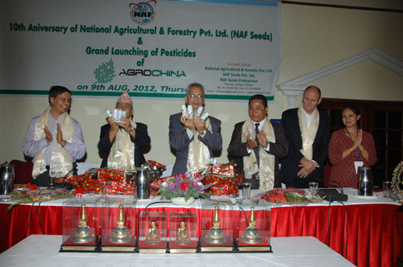

<section class="container-fluid content">
  <div class="container-fluid">
    <div class="row">
  <div class="col-xs-12 col-md-8">
    <div class="container-fluid inner-block">
      <h3>about <span class="second"> our company</span></h3>
      <hr>
      <div class="row">

          <div class="col-xs-6 col-md-4">
            
          </div>
          <div class="col-xs-12 col-md-8">
            <p class="text-2">Breif history of nafseed</p>
            <p class="sub-head text-justify">
              NAF is situated at Na Tole, Lalitpur Sub-Metropolitan Nepal and was established in July,
              2000 as per the policy of His Majesty's Government of Nepal.
               NAF does all work including marketing of the products of other renowned international company as well as domestic company.<br/>
              NAF, is the Nepal leading supplier of vegetable seeds through its dedication to research and marketing in
              remote areas as well as in urban and sub-urban areas. NAF is offering a complete variety of seeds based on
              it's productivity from different region of different altitude to all districts of Nepal. Our impressive client includes
              district's dealer Agro vets, NGO, INGO and Government owned distributors.<br/>
            </p>
          </div>
        </div>
    </div>
  </div>
  <!-- right side -->
  <div class="col-md-4">
    <div class="container-fluid inner-block">
        <h3 >objectives</h3>
        <hr>
        <ul class="text-left object text-left" style="list-style:none">
          <li>Supply production inputs like seed, manure, fertilizers, hormones, pesticides etc to the members and even to non-members to increase production.</li>
          <li>Provide technical supports to farmers through field training, field visits and field demonstration.</li>
          <li>Support to produce vegetable, fruits, buckwheat, vegetable, rice etc.</li>
          <li>Conduct soft research at our farm, verify and demonstration these findings of farm at farmers field of our command areas.</li>
        </ul>
    </div>
  </div>
    </div>

  </div>
</section>
